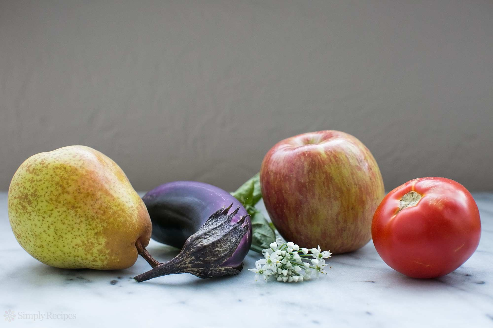

about us
Thank you so much for stopping by the site! If you are new to Chef Stories, the one thing you should know about us is that we are obsessed with creating scratch cooking recipes that you will love.
Chef Stories was founded by Jamie Zhang, a professional pastry chef. In the fine dining kitchens where she worked, Jamie saw vast amounts of knowledge about food sustainability, nutrition, and local agriculture—but that knowledge stayed trapped behind kitchen walls. She founded Chef Stories as a tool to connect chefs and growers—along with their valuable knowledge
Chef Stories is blessed to have several talented writers and recipe developers contributing recipes to the site. You’ll find recipes from James Beard award winning Hank Shaw of Hunter Angler Gardener Cook, author Garrett McCord, food blogger and author Irvin Lin of Eat the Love, Boston Globe food writer Sally Vargas, former Boston Globe food editor Sheryl Julian, food blogger and videographer Lisa Lin of Healthy Nibbles and Bits, food blogger Megan Keno of Country Cleaver, and food blogger Sabrina Modelle of The Tomato Tart, among others.
For several years now, we’ve been developing recipes in-house, inspired by what is growing in the garden, and seasonal produce we find at the market. If you look through the archives though, you’ll find many old family recipes, and recipes Elise’s family has over 30 years pulled from cookbooks, magazines, and newspaper clippings.
Since we are developing recipes in our home kitchens, all of our recipes are made with the home cook in mind. We want you to love our recipes as much as we do! Since not every home kitchen is set up the same way, as of early 2017, we now do an extra round of recipe testing with a team of recipe testers who work from their home kitchens. They make and give feedback on each new recipe that goes up on Simply Recipes, making sure it’s perfect before it goes out the door.
Comments are open on the most recent recipes and posts. When leaving comments, we ask that you think of this website as our home. Please don’t say anything on this site that you wouldn’t, as an invited guest, say in someone’s home. Constructive criticism is welcome, as we all benefit from such advice.
 Fettuccine Alfredo with Mushrooms
Fettuccine Alfredo with Mushrooms
Fettuccine alfredo with mushrooms brings a mix of cheesy, creamy and earthy flavors together. It's a restaurant-worthy dish you can totally make at home.
Quick weeknight chicken pho from expert Andrea Nguyen! Shortcut version of traditional Vietnamese noodle soup. 30-minutes. Gluten-free.